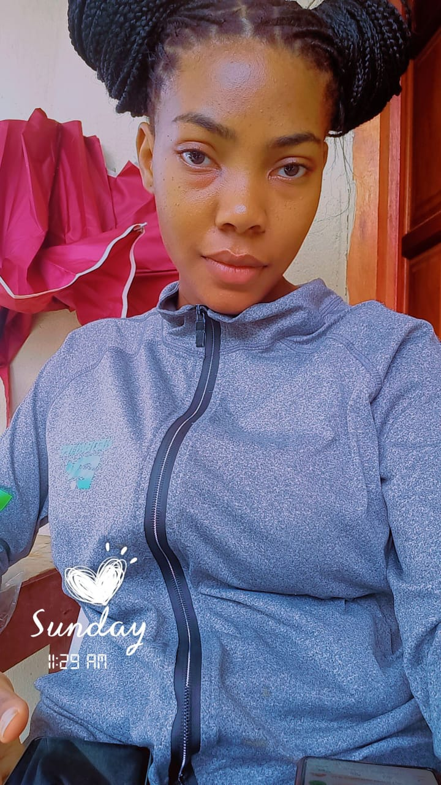

My Professional Journey
My name is Laone Losika Albert, a year 1 Business Intelligence and Data Analytics student with a growing passion for machine learning, data visualization and turning raw data into meaningful insights. I enjoy exploring how tools like Excel, Power BI and Python can create powerful solutions for real-world challenges.
My journey into tertiary education has been both challenging and transformative. Studying Business Intelligence and Data Analytics has opened my eyes to the world of data, how it is collected, cleaned, analyzed and used for decision-making. I enjoy working with tools like Excel and Power BI and I am especially excited about learning machine learning in the future.
Technical Skills
| Technology | Proficiency |
|---|---|
| HTML5/CSS3 | Intermediate |
| Flexbox | Beginner |
| Microsoft Excel | Intermediate |
| Power BI | Beginner |